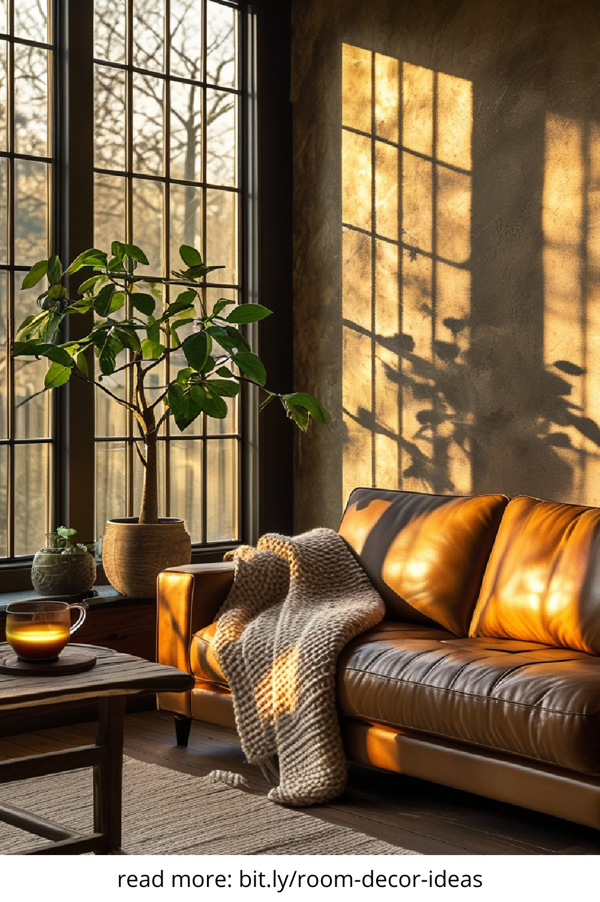
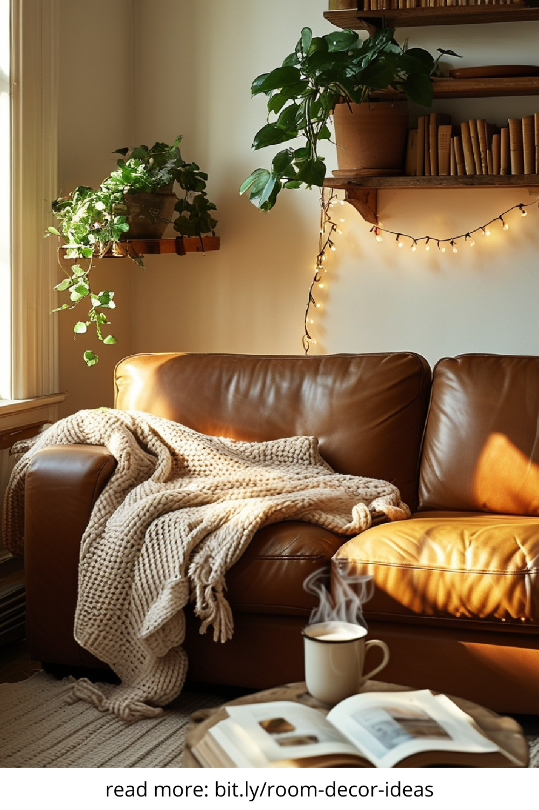
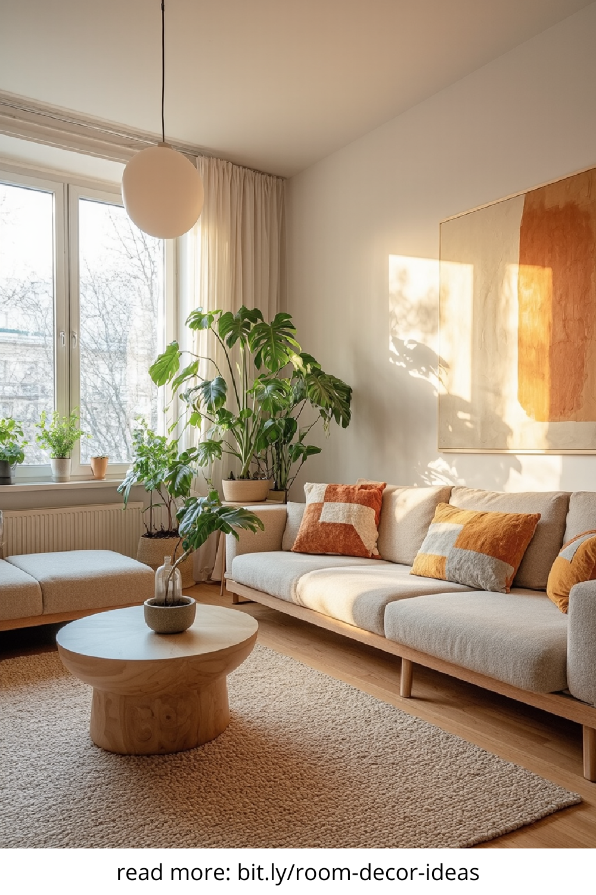
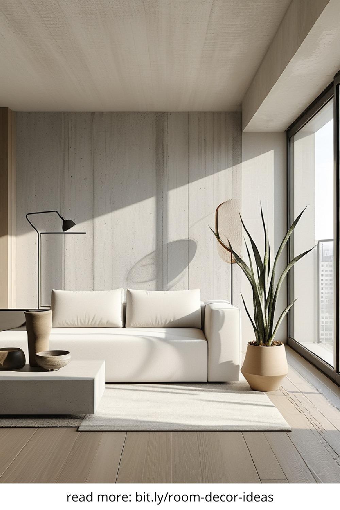

In today’s fast-paced, design-conscious world, the apartment aesthetic is more than just décor—it’s an expression of lifestyle. Whether you're living in a studio or a spacious loft, the look and feel of your space directly impact your mood, productivity, and even your mental health. With urban living on the rise, renters are seeking clever ways to personalize their homes without permanent changes. Enter the era of aesthetic apartments—spaces that balance style, comfort, and creativity.
Apartments may come with limited square footage, but that doesn’t mean they have to be short on style. A truly effective apartment aesthetic leans heavily on space-saving strategies that also look good. Think multifunctional furniture like ottomans with storage, floating shelves that double as art displays, and mirrors that amplify light while making a room feel larger. When curated well, even a 300-square-foot apartment can exude the elegance of a boutique hotel suite.
Color plays a pivotal role in creating a cohesive apartment aesthetic. Soft neutrals like beige, sage, and off-white promote relaxation and openness, perfect for small or dimly lit apartments. On the other hand, bold tones like emerald green, burnt orange, or navy blue create focal points and show off personality. It’s not just about the walls—incorporating your chosen palette through textiles, wall art, and accent pieces makes the aesthetic flow naturally.
Forget the idea that decorative items are just for show. In a well-designed apartment, everything should serve a purpose—even the pretty stuff. Wall-mounted coat racks, stylish storage baskets, and decorative lighting can add to your apartment aesthetic while solving everyday problems. A minimalist approach with functional beauty in mind is key to maintaining a space that feels uncluttered yet lived-in.
If your apartment feels flat or sterile, chances are it’s missing texture. Incorporating various materials—like a jute rug, velvet cushions, or a leather pouf—can instantly elevate your aesthetic. Layering is a subtle art form that transforms a bland room into a curated sanctuary. Think of throws draped over a mid-century chair, linen curtains catching the light, or raw wood surfaces contrasting with sleek ceramics.
Many renters believe they’re limited by landlord restrictions, but there are plenty of reversible upgrades that add instant character. Peel-and-stick wallpaper, plug-in sconces, and removable backsplash tiles let you personalize your apartment aesthetic without risking your deposit. Even something as simple as swapping out cabinet knobs or layering an area rug can make your space look bespoke.
No modern apartment aesthetic is complete without a touch of green. Houseplants not only purify the air, but they also breathe life into your interiors. From hanging pothos in the bathroom to a majestic fiddle leaf fig in the corner of your living room, plants add organic texture and vibrant color. For beginners, low-maintenance options like snake plants and ZZ plants are a great place to start.
Smart home devices now blend seamlessly into modern apartment aesthetics. Sleek smart bulbs, voice-activated speakers, and minimalist thermostats can make your space both functional and futuristic. Choose tech that complements your style—whether you lean Scandinavian, boho, or industrial—and let innovation enhance your daily life.
Your apartment aesthetic should reflect who you are and how you want to feel in your space. From the layout to the lighting, every decision contributes to the overall experience. Take time to experiment, mix styles, and evolve your apartment as your life changes. With a blend of intentional design and personal flair, any apartment can become a haven of style and substance.
   